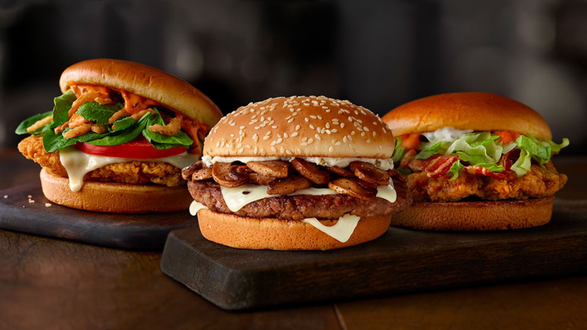

¿Quiénes somos?
Burger Joint nació como un pequeño local familiar en el año 2012, desde entonces la empresa ha crecido hasta convertirse en uno de los principales actores de la cocina argentina.
Nuestra especialidad
Las hamburguesas de Burger Joint son nacionalmente reconocidas, estas han sido galardonadas como "la mejor hamburguesa nacional" por el prestigioso diario Noticias en el año 2017. Además de nuestras exquisitas hamburguesas, contamos con una amplia carta a la cual puedes acceder en la pestaña Menú.
¿Dónde nos ubicamos?
Nuestros locales se encuentran en las principales ciudades de todo el país.
Mar del Plata
Av. Juan B. Justo 2184
Teléfono: 223-458-1231
CABA
Talcahuano 2554
Teléfono: 011-4123-1240
La Plata
Calle 122 entre 50 y 51
Teléfono: 0221-412-1230
Rosario
Bv. Oroño 2120
Teléfono: 0341-421-4212
Córdoba
Santa Rosa 750
Teléfono: 0351-421-3043

